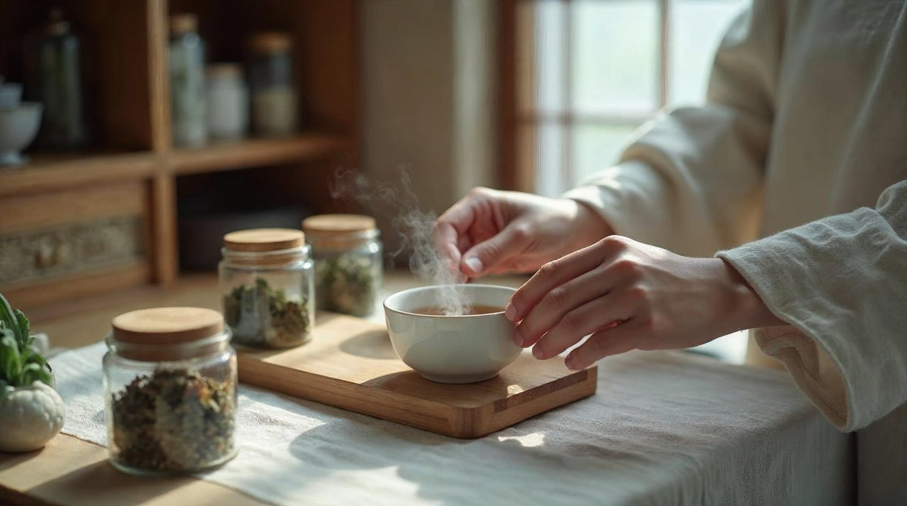
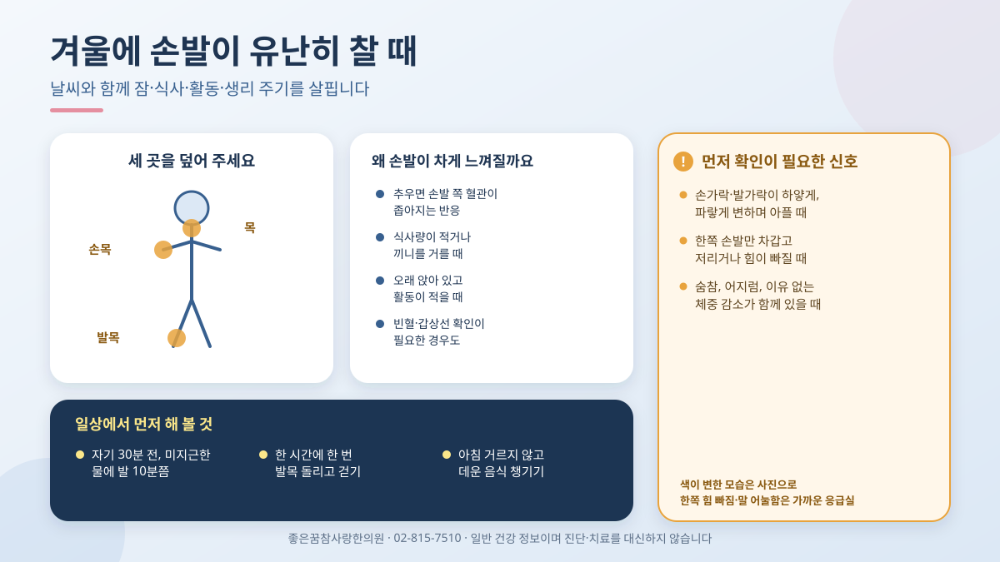

이종호 한의사 감수좋은꿈참사랑한의원 대표원장 (한의사 면허번호 19769)발행 2026-11-22 · 수정 2026-11-26
이 글의 차례
겨울에 손발이 유난히 차다면 날씨 탓만으로 넘기기보다 잠, 식사량, 활동량, 생리 주기와 함께 살펴보는 것이 좋습니다. 이불 속에서도 발이 시려 한참 뒤척이거나, 실내에서도 손끝이 차가워 일에 집중하기 어렵다는 분이 많습니다. 한의원에서는 손발의 온도와 함께 생활 전체의 리듬을 여쭙고, 다른 원인이 의심되는 신호가 있으면 병원 확인을 먼저 권합니다.
왜 이런 불편이 생길 수 있나요
- 추위에 노출되면 몸이 중심부의 온도를 지키려고 손발 쪽 혈관을 좁히는 반응이 생길 수 있습니다.
- 식사량이 적거나 끼니를 거르면 몸이 열을 만드는 데 쓸 에너지가 부족해질 수 있습니다.
- 오래 앉아 있거나 활동량이 적으면 다리 쪽 순환이 느려져 발이 더 차게 느껴지는 경우가 있습니다.
- 빈혈이나 갑상선 기능 변화처럼 확인이 필요한 원인이 숨어 있는 경우도 있습니다. 한의학에서는 몸의 온기와 기운의 흐름, 소화 상태도 함께 살핍니다.
먼저 이렇게 여쭙니다
- 손발이 차가운 것은 언제부터이고, 하루 중 어느 때 가장 심한가요?
- 손가락이나 발가락 색이 하얗게 또는 파랗게 변하나요?
- 발이 차서 잠드는 데 시간이 걸리나요?
- 식사량, 체중 변화, 어지럼, 피로가 함께 있나요?
- 생리 전후로 손발 냉감이 더 심해지나요?

일상에서 먼저 해 볼 수 있는 것
- 잠들기 30분 전 미지근한 물에 발을 10분쯤 담그거나 얇은 수면 양말 신기
- 오래 앉아 있다면 한 시간에 한 번 일어나 발목을 돌리고 제자리 걷기
- 아침을 거르지 않고 국이나 죽처럼 데운 음식 챙기기
- 차가운 음료와 아이스커피는 줄이고 따뜻한 물로 바꿔 보기
- 외출할 때 장갑과 목도리로 손목, 발목, 목을 덮기

한의원에서 함께 살필 수 있는 경우
- 생리 전후로 손발이 더 차고 아랫배까지 서늘한 경우, 주기와 체온 변화를 함께 살핍니다.
- 손발이 차면서 피로와 얕은 잠이 함께 오는 경우, 잠의 리듬과 긴장 상태를 함께 살핍니다.
- 소화가 더디고 식사량이 적은 경우, 식사 습관과 몸의 온기를 함께 살핍니다.
좋은꿈참사랑한의원에서는 먼저 손발이 언제, 어떻게 차가운지 충분히 듣고, 진맥을 기본으로 하고 필요하다고 판단될 때 설진·복진을 더해 몸 상태를 살핀 뒤 침이나 한약 상담 등 맞는 방법을 함께 정합니다. 귀가 전에는 집에서 지켜볼 점과 다음에 확인할 일을 알려 드립니다.
이렇게 기록해 오시면 상담이 쉬워집니다
- 손발이 특히 찼던 시간과 장소(출근길, 사무실, 잠자리 등)
- 손가락·발가락 색이 변한 적이 있다면 그 모습을 찍은 사진
- 최근 한 달의 생리 시작일과 그 무렵의 냉감 정도
- 복용 중인 약과 영양제, 최근 건강검진 결과지
이런 증상은 먼저 확인이 필요합니다
- 한쪽 손이나 발만 유난히 차갑고 저린 경우, 특히 갑자기 차갑고 창백해지면서 아픈 경우
- 갑자기 한쪽 팔다리에 힘이 빠지거나 말이 어눌해지는 경우
- 손가락이나 발가락 색이 하얗게 또는 파랗게 변하는 일이 자주 되풀이되는 경우
- 손끝이나 발끝에 상처가 생기거나 잘 낫지 않는 경우
- 숨이 차거나 어지럼, 이유 없는 체중 감소가 함께 있는 경우
위 신호가 있으면 한의원 진료보다 내과 등 의과 확인을 먼저 받으세요. 특히 한쪽 손발이 갑자기 차갑고 창백해지며 아프거나, 한쪽 팔다리에 힘이 빠지거나 말이 어눌해지면 기다리지 말고 바로 가까운 응급실을 이용하세요. 복용 중인 약은 처방한 의사와 상의 없이 줄이거나 끊지 않습니다.

여쭙는 것
- 손발이 차가운 것은 언제부터이고, 하루 중 어느 때 가장 심한가요?
- 손가락이나 발가락 색이 하얗게 또는 파랗게 변하나요?
- 발이 차서 잠드는 데 시간이 걸리나요?
생활에서 해 볼 것
- 잠들기 30분 전 미지근한 물에 발을 10분쯤 담그거나 얇은 수면 양말 신기
- 오래 앉아 있다면 한 시간에 한 번 일어나 발목을 돌리고 제자리 걷기
- 아침을 거르지 않고 국이나 죽처럼 데운 음식 챙기기
한의원에서 함께 살필 것
- 생리 전후로 손발이 더 차고 아랫배까지 서늘한 경우, 주기와 체온 변화를 함께 살핍…
- 손발이 차면서 피로와 얕은 잠이 함께 오는 경우, 잠의 리듬과 긴장 상태를 함께 살…
- 소화가 더디고 식사량이 적은 경우, 식사 습관과 몸의 온기를 함께 살핍니다.
먼저 확인이 필요한 신호
- 한쪽 손이나 발만 유난히 차갑고 저린 경우, 특히 갑자기 차갑고 창백해지면서 아픈 경우
- 갑자기 한쪽 팔다리에 힘이 빠지거나 말이 어눌해지는 경우
- 손가락이나 발가락 색이 하얗게 또는 파랗게 변하는 일이 자주 되풀이되는 경우
한눈에 보는 표
| 구분 | 핵심 |
|---|---|
| 여쭙는 것 | 손발이 차가운 것은 언제부터이고, 하루 중 어느 때 가장 심한가요? 손가락이나 발가락 색이 하얗게 또는 파랗게 변하나요? |
| 생활에서 해 볼 것 | 잠들기 30분 전 미지근한 물에 발을 10분쯤 담그거나 얇은 수면 양말 신기 오래 앉아 있다면 한 시간에 한 번 일어나 발목을 돌리고 제자리 걷기 |
| 한의원에서 함께 살필 것 | 생리 전후로 손발이 더 차고 아랫배까지 서늘한 경우, 주기와 체온 변화를 함께 살핍니다. 손발이 차면서 피로와 얕은 잠이 함께 오는 경우, 잠의 리듬과 긴장 상태를 함께 살핍니다. |
| 먼저 확인이 필요한 신호 | 한쪽 손이나 발만 유난히 차갑고 저린 경우, 특히 갑자기 차갑고 창백해지면서 아픈 경우 갑자기 한쪽 팔다리에 힘이 빠지거나 말이 어눌해지는 경우 |
자주 묻는 질문
손발이 찬 것은 한의원에서 어떻게 보나요?
증상이 나타나는 시간과 상황, 잠과 식사, 생리 주기를 함께 여쭙고 생활 속 리듬을 살핍니다. 진맥을 기본으로 하고 필요하다고 판단될 때 설진·복진을 더해 몸 상태를 확인합니다.
따뜻한 음식만 먹으면 되나요?
한 가지 음식으로 정해지지 않습니다. 식사 시간과 양, 활동량, 잠을 함께 살피는 것이 좋습니다.
핫팩을 오래 대고 있어도 괜찮나요?
같은 자리에 오래 대면 저온 화상이 생길 수 있습니다. 옷 위로 짧게 쓰고, 감각이 둔한 곳에는 피해 주세요.
복용 중인 약이 있어도 괜찮을까요?
복용 중인 약은 임의로 바꾸거나 중단하지 말고 처방한 의사와 상의하세요. 진료 때 약 이름을 알려 주시면 함께 확인합니다.
좋은꿈참사랑한의원은 재진 때 지난번 이야기부터 이어서 여쭙니다. 진료시간과 예약은 오시는 길에서 확인하세요.
어디서 상담받을 수 있나요?
좋은꿈참사랑한의원은 서울 동작구 만양로2길 2 신성빌딩 3층·5층(서울 동작구 상도동, 7호선 상도역 3번 출구 근처)에 있습니다. 한의사 3명(이종호 대표원장, 조영기 수석진료원장, 정원영 진료원장)이 진료합니다. 진료시간은 평일 09:30~20:00(점심 13:00~14:00), 토·일·공휴일 09:30~15:00이며, 방문 전 전화로 확인을 권합니다. 예약은 네이버 예약, 카카오톡 상담, 전화 02-815-7510로 받습니다.
이 글은 일반적인 건강 정보이며 개인의 진단이나 치료를 대신하지 않습니다. 증상이 있거나 복용 중인 약이 있다면 진료를 통해 확인하세요. 치료 효과는 개인마다 다를 수 있습니다.
작성 기준: 일반적으로 알려져 있는 건강 정보를 참고해 정리했습니다(대표원장 감수). 증상 기록은 1~2주 동안 하루 1회, 비슷한 시간에 적어 오시면 지난 상태와 비교하기 쉽습니다.